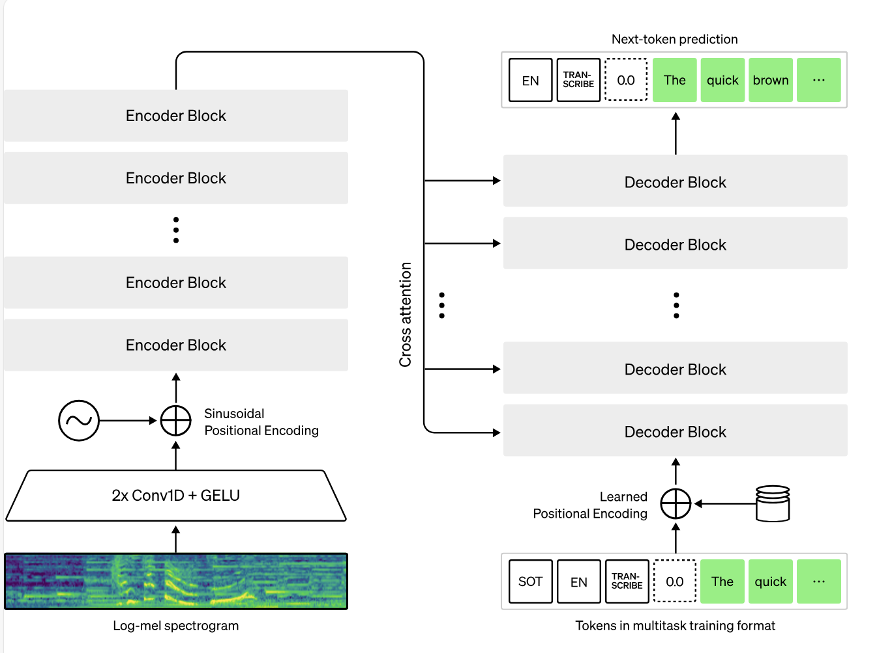
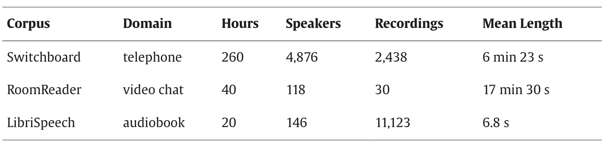
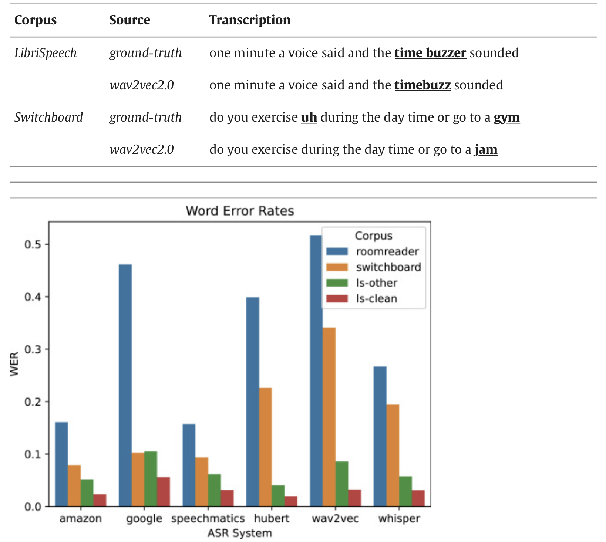
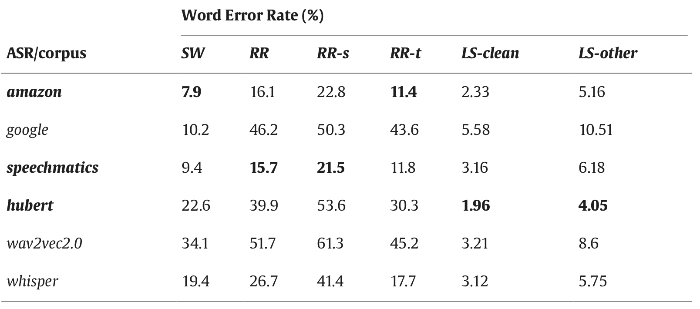
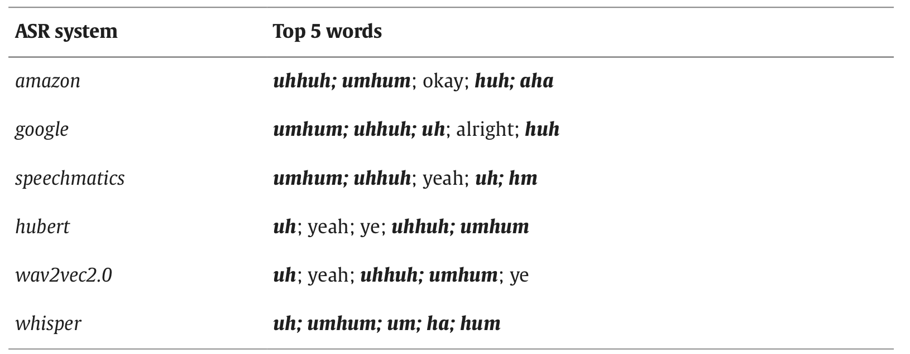
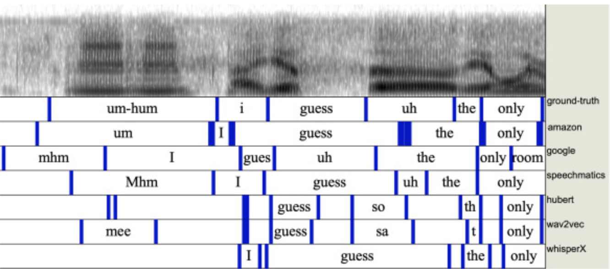
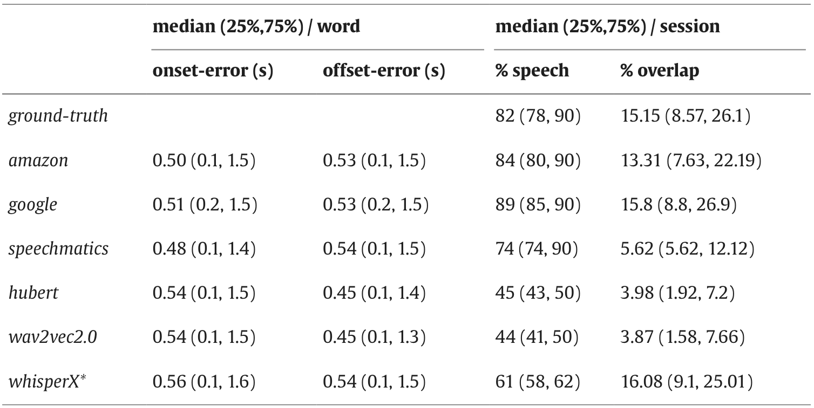
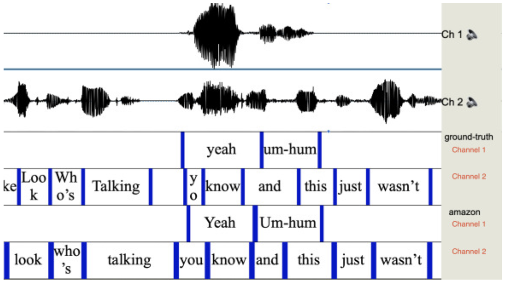

This is a paper from 2024 which we had to study in my speech processing lecture at Twente.
Source: link
ASR (Automatic Speech Recognition) has had a lot of attention lately, driven by the wide availability of ASR platforms such as OpenAI’s Whisper.
Context
Spoken conversation is complex
- Interlocutors exchange speaking turns rapidly, ofter speaking in overlap (Sacks et. al, 1978)
- Words may be spoken incompletely as interlocutors correct themselves or others (Schegloff, 2000)
- There is also a rich use of interjections: short words such as uh-hum and gosh which have many functions including signalling agreement or the intent to speak (Dingemanse, 2024)
Computer scientists also study conversation: robots which can understand NLTs (non-lexical tokens) such as umm in human speech tend to interrupt humans less often, improving the interaction (Bilac et. al 2017)
The development of these algorithms requires training data, i.e. transcribed conversations.
OpenAI Whisper (Radford et. al, 2023)
Source: official documentation
Whisper is an automatic speech recognition (ASR) system trained on 680,000 hours of multilingual and multitask supervised data collected from the web. We show that the use of such a large and diverse dataset leads to improved robustness to accents, background noise and technical language. Moreover, it enables transcription in multiple languages, as well as translation from those languages into English. We are open-sourcing models and inference code to serve as a foundation for building useful applications and for further research on robust speech processing.
The Whisper architecture is a simple end-to-end approach, implemented as an encoder-decoder Transformer. Input audio is split into 30-second chunks, converted into a log-Mel spectrogram, and then passed into an encoder. A decoder is trained to predict the corresponding text caption, intermixed with special tokens that direct the single model to perform tasks such as language identification, phrase-level timestamps, multilingual speech transcription, and to-English speech translation.

Because Whisper was trained on a large and diverse dataset and was not fine-tuned to any specific one, it does not beat models that specialize in LibriSpeech performance, a famously competitive benchmark in speech recognition. However, when they measure Whisper’s zero-shot performance across many diverse datasets they find it is much more robust and makes 50% fewer errors than those models.
About a third of Whisper’s audio dataset is non-English, and it is alternately given the task of transcribing in the original language or translating to English.
Word Error Rate (WER)
ASR accuracy is typically quoted using the word error rate (WER), which rewards correct spelling and word placement.
A lower WER indicated superior performance
State-of-the-art ASR systems such as Whisper achieve a 2-3% WER on audiobook speech, out-performing humans who transcribe with a 4% WER.
Factors which impact the WER:
- as the level of background noise
- the dialects
- accents of native and non-native speakers
An ASR transcription is generally considered ready-to-use when the WER is less than 10% (Microsoft, 2024). However, the WER metric does not detail the types of errors that occur.
Apparently, these ASR systems fail to capute NLTs such as uhmm (94-98% error by Google and Amazon) in patient-doctor interactions. It's considered that these words carry important clinical meaning, thus ASR cannot be used to automate medical notetaking tools, irrespective of the overall WER.
Datasets
In the study they used 3 datasets:
- Switchboard — common ASR benchmark consisting of unscripted, two-party, English telephone conversations about set topics, e.g. recycling. The transcripts include word timings and annotation of filled pauses, which contain NLTs (uhm, etc.). Dialogue partners are native speakers of US English grouped into 7 dialect categories covering the continental US (e.g. New York, Southern, Western, etc.). Recordings are captured at 16 kHz stereo with one channel per speaker, although the respective other speaker is faintly audible (microphone bleed). There are no other specific sources of noise which would be detrimental to ASR performance in the recordings, e.g. echo or background noise
- RoomReader — is a corpus of small group, English conversational interactions recorded over Zoom. A tutor guides 3–4 students through a game using prompts such as “Name somewhere you could catch a cold or flu.”. Most speakers are native speakers of Irish-English. The remaining speakers are fluent in English and have a variety of native languages (Greek, French, etc.). The mix of native and non-native speakers in this corpus makes it a valuable benchmark as ASR performance is degraded in non-native accented speech (since ASR performance is often optimised of US English). The corpus contains a single 32 kHz mono recording per speaker with no microphone bleed. The recordings were made in the wild during the COVID-19 pandemic, recordings are from wide variety of domestic environments such as home offices and shared kitchens.
- LibriSpeech — English audiobook recordings to assess read speech transcription. LibriSpeech recordings are captured at 16 kHz mono. Each recording in LibriSpeech is assigned either a
cleanor anotherlabel, whereothermeans that it is more challenging for an ASR system to transcribe.

They resample the RoomReader audio to 16kHz to match Switchboard and LibriSpeech using ffmpeg — a library which I used intensively to modify videos and pictures in Ubuntu. In Switchboard, they also removed the microphone bleed using Torchaudio as the corpus is provided with a ground-truth word alignment based on timings.
Speaker diarisation is an alternative strategy which could be employed to handle microphone bleed in recordings. It solves the “who spoke when” problem which arises when multiple speakers are present in a single audio channel or signal.
However, they opted not to use diarisation as it introduces its own sources of error, such as distortion.
They evaluate the datasets based on four criteria:
- accurate representation of what was said
- NLTs
- timing of words
- overlapping speech
To determine if an ASR accurately captures what was said, they used WER at corpus level.
They used the jiwer Python package to compute the number of matches, as well as deletion, substitution and insertion errors.
Prior to running jiwer, they removed all non-alphanumeric characters except apostrophes and performed normalization (numbers translated into words “1” → “one”, “0” → “th”, “1” → “st”, ”-” → “minus”, ”%” → “percent”, removing commas, etc.) to ensure the WER was not penalized by differences between UK and US spelling (rumour vs. rumor), numbers (100 vs. one hundred), contractions (you’ll vs. you will), etc.
As a rule of thumb, Microsoft(2024) advise that
- a 5-10% WER means an ASR is “ready to use”,
- 20-30% indicates optimisation is necessary,
- > 30% indicates poor quality
Results
All ASR platforms have a lower WER on read speech (LibriSpeech) than on conversational speech (Switchboard and RoomReader).

During this study, they mainly wanted to conduct a comparison between open-source and commercial models.

Top ASR errors involve non-lexical tokens
They count the the occurrences of each word in the human and ASR transcripts excluding stopwords and compare counts using the log-likelihood ratio (LLR), which compares relative word frequencies. They found that NLTs such as uhhuh and huh are less likely to occur in an ASR-generated transcript than in a human transcription.

They also looked more in detail which words were mostly deleted, inserted, matched, etc. More can be found in their study.
Word timing and overlap
They used the switchboard corpus as it contains a ground-truth word alignment and showed the results using Praat(software).

They also compute the absolute difference between the human and ASR start and end times of each word (the onset error and the offset error. The table shows that the median onset and offset timing errors are approximately 500 ms.

They also looked at how these models interpret the overlap

Overall, their conclusion is that open-source ASR has substantially more errors than commercial ASR.
We found that a notable difference between commercial and open-source ASR is that commercial ASR captures more NLTs such as uh-hum, though misspellings are common. We discussed how cost and privacy advantages may outweigh performance issues.